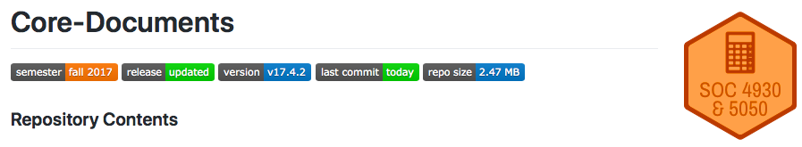

2.4 Staying Current
Course content is maintained both on the respective course websites (Quantitative Analysis and GIS) and GitHub organizations (Quantitative Analysis and GIS). Course materials are available throughout the semester and after the course is done. This creates two challenges. First, for all students, attention must be paid to when updates are pushed to GitHub and the course website. This is particularly true for content updated after a lecture. Second, for students who like to work ahead, care must be taken to ensure that you are working off of materials for the current semester and not the last semester the course was taught. There are two ways in which I help communicate the status of course content - badges and Slack.
2.4.1 Badges
I use badges on both the GitHub README.md files in individual lecture repositories and on individual lecture webpages to signal which semester the content is current for and what stage of development the content is in. These badges are used not just because they are effective but as part of a more general socialization into data science software development, where badges are used to signal development status on R package GitHub repositories. For example, the ggplot2 README.md file looks like this:
There are four badges in total, all of which sit under the ggplot2 package name. We can see from the first two badges that continuous integration services are used, and that ggplot2 is only passing its tests on one of them. The third badge indicates that the built-in tests for ggplot2 test 74% of the package’s code. We can also see from the fourth badge that the current version of the software on CRAN is version 2.2.1 (as of December, 2017). Details like these are not critical when you are first learning to use R, but they grow more important as your data science skills progress.
We use the following badges for our course repositories and on the course websites:
Here is an example of how the badges look on a course repository. As of January 2018, the README.md associated with the Core-Documents repository for Quantitative Analysis looked like this:

The README.md badges, from left to right, represent the following:
- semester: the contents are current for the Fall 2017 semester
- release: the contents have been updated since they were first released to students
- version: the version number of the repository (see Versioning below) is
v17.4.2 - last commit: the last time the repository was edited was the day the screenshot was taken
- repo size: the repository size is 2.46 megabytes (MB, see this article for details on what computer disk drive size measurements mean)
Here is an example of how the badges look on a course website. As of January 2018, the Course Preview page for GIS looked like this:
From these three badges, we can see that the webpage is current for the Spring 2018 semester and that it is the full release - no additional updates to the site are planned. Finally, we can see the date on which the page was last updated - December 29, 2017.
2.4.2 Versioning
The versioning system used on course repositories is meant to emulate the release system used for data science software. Software development increasingly takes place on a website called GitHub.com. GitHub includes tools for packaging a repository at particular points in time. The release system allows developers to identify how an R package, for instance, has changed over time. This is important for reproducibility. For instance, you can see this example of the release history for ggplot2:
The package’s developers use the release system to document what has changed. We will emulate this with the Core-Documents, lecture, and finalProject repositories. For example, here is the release documentation for SOC 4650/5650 Core-Documents repository:
If you want to see what has changed over the course of the semester in a course’s repositories, you can use the release notes to compare different versions. These notes are also stored in the NEWS.md file for each repository. The use of both releases and a NEWS.md file is a common way to document changes on GitHub. For example, you can see look at the NEWS.md file for ggplot2, which will mirror the release notes for the package.
In software development, version numbers are used along with releases to make it easy for end users to keep track of how releases have progressed. In the picture above of the ggplot2 package’s README.md (see Badges), one of the badges indicated the version of the software that was available via CRAN - 2.2.1. The initial 2 is what is known as the major release number. Major releases typically represent large changes to the software. The second number, also a 2 in this case, represents the minor release number. Minor releases introduce fewer changes and may be aimed more at fixing issues. Finally, the 1 represents the patch release number. Patch (or maintenance) releases are aimed exclusively at fixing bugs and issues.
For the course, version numbers will also have three parts. From left to right, the first pair of digits represents the year of the current course offering, the second pair represents whether it the development status is (1) draft, (2) lecture, (3) full, and (4) updated, and the final number represents maintenance changes that do not rise to a change in the development status. For example, v18.1.1 would represent the initial maintenance release for the 2018 version of a course that is in the draft development stage.
If you see a version number like v18.1.1.9000 in NEWS.md, the notes will be tracking changes that have not been incorporated into an official release yet. The use of the 9000 designation follows common practice in the R community.
2.4.3 Slack
The #_news channel in each course’s Slack organization will be automatically updated with a list of commit messages for each lecture repository. The updates will look like this:

You will be able to scan through commit messages for updates that might be relevant for you. Commit messages are a core part of using Git, and are discussed in the Basic Git chapter. From these messages, we can see that changes were made to the LICENSE (one of the meta documents) in the Core-Documents repository for GIS. We can also see that a change was made to the Syllabus’s content for the course.
I recommend scanning through all new messages in #_news each time you check in with the course on Slack. If you see changes, sync your repository (if you are keeping local copies) or download the updated document.